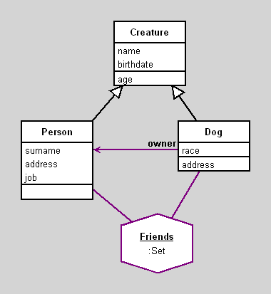

Creatures - Persons and Dogs
author(s): Vojtech Merunka
This is the example made for Lehigh University
(C) 2006-2007 V.M.
Workspace
Friends select: [:f | f age > 15]
Friends select: [:f | f address = 'Allentown']
Friends select: [:f | f age < 15]
Workspace Objects
Script
Friends := Set new.
p := Person new.
p name: 'Peter'.
p surname: 'Black'.
p birthdate: '5 2 1981' asDate.
p address: 'Easton'.
p job: 'taxi driver'.
Friends add: p.
j := Person new.
j name: 'Jane'.
j surname: 'Green'.
j birthdate: '4 4 1974' asDate.
j address: 'Allentown'.
j job: 'pop singer'.
Friends add: j.
p2 := Person new.
p2 name: 'Peter'.
p2 surname: 'White'.
p2 birthdate: '7 7 1967' asDate.
p2 address: 'Allentown'.
p2 job: 'pop singer'.
Friends add: p2.
p3 := Dog new.
p3 name: 'Spot'.
p3 owner: j.
p3 race: 'foxterier'.
p3 birthdate: '2 2 2002' asDate.
Friends add: p3.
Diagram

Classes
Creature
|
instance variables
birthdate :Date
name :String
|
methods
age
birthdate
birthdate:
initialize
name
name:
|
|
Abstract class, which implements common behavior for both Person and Dog.
This class does not have any instance.
It is only the software implementation of common
behavior for classes Person and Dog.
|
code of non-accessing methods:
Person
|
instance variables
address :String
job :String
surname :String
|
methods
address
address:
initialize
job
job:
surname
surname:
|
|
Human creature. It is concrete subclass of class Creature.
|
code of non-accessing methods:
Dog
|
instance variables
owner :Object
race :String
|
methods
address
initialize
owner
owner:
race
race:
|
|
Dog creature. It is concrete subclass of class Creature.
|
code of non-accessing methods:
Links
Data file and
class source.
Generated by Daskalos - Object Modeling Tutor (C) 2006 V. Merunka
May 7, 2007